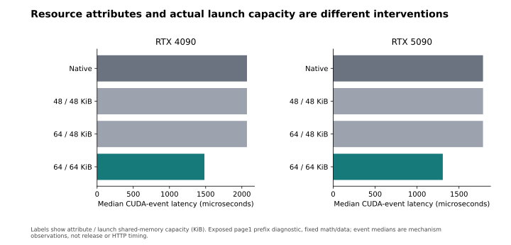
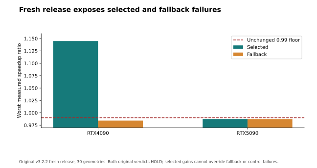
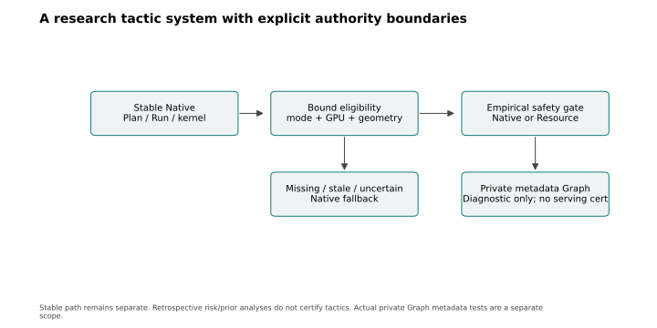
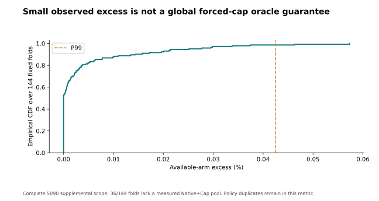
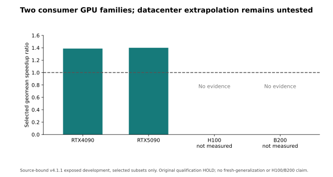
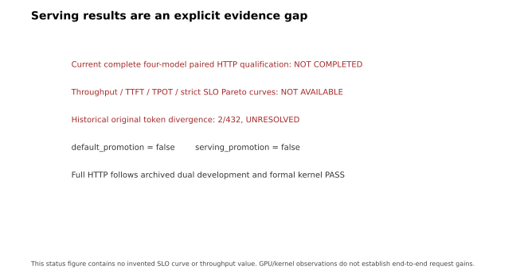

Research artifact only. Original canary HOLD; default and serving promotion false; original 2/432 unresolved.
Complete 5090 retrospective analysis, separately scoped dual Graph functional evidence, and retained negative results. Current full HTTP and H100/B200 results are unavailable.






| scope | result | evidence |
| Private dual Graph metadata | Diagnostic PASS | 32 cells; 96 epochs; 3264 traced attention launches |
| Original v4.2 canary | HOLD | Original 2/432 token divergence unresolved |
| Full current HTTP | Not qualified | No promoted serving result |
| scope | metric | value | unit |
| RTX4090 v4.1.1 selected exposed | geomean | 1.387584906839721 | ratio |
| RTX5090 v4.1.1 selected exposed | geomean | 1.4000256057401848 | ratio |
| RTX5090 supplemental 144 fixed folds | available-arm excess P99 | 0.042468246096653166 | percent |
| RTX5090 supplemental 144 fixed folds | unmeasured Native+Cap pools | 36 | folds |
| metric | value | status |
| request_per_s | unavailable | NOT_QUALIFIED_NOT_IMPUTED |
| input_tok_per_s | unavailable | NOT_QUALIFIED_NOT_IMPUTED |
| output_tok_per_s | unavailable | NOT_QUALIFIED_NOT_IMPUTED |
| ttft_percentiles | unavailable | NOT_QUALIFIED_NOT_IMPUTED |
| tpot_percentiles | unavailable | NOT_QUALIFIED_NOT_IMPUTED |
| itl | unavailable | NOT_QUALIFIED_NOT_IMPUTED |
| strict_slo_goodput | unavailable | NOT_QUALIFIED_NOT_IMPUTED |
Metrology, risk, prior and regret analysis · Tables · Source/output hashes and scopes